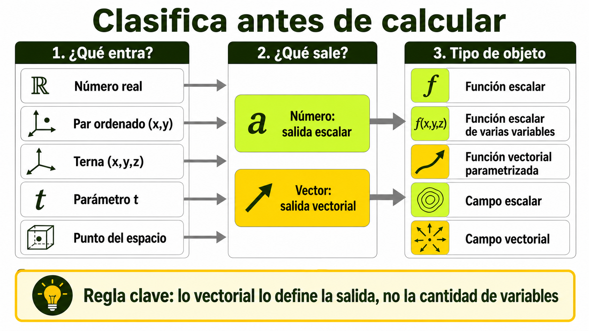
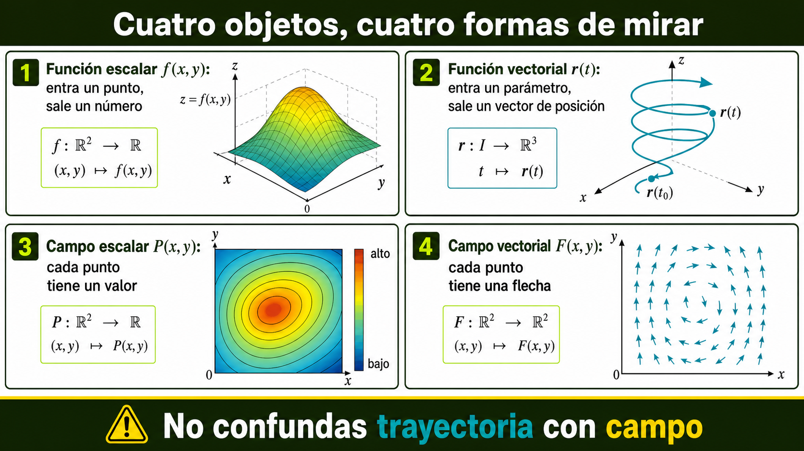
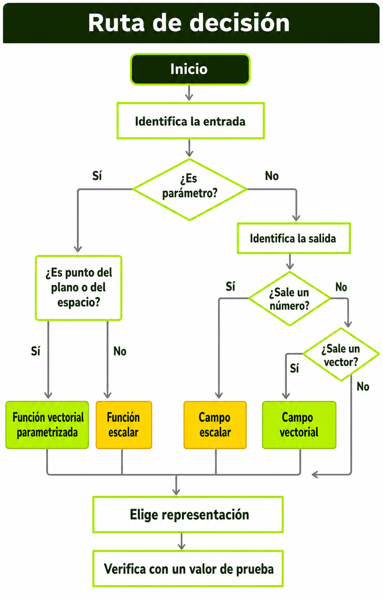
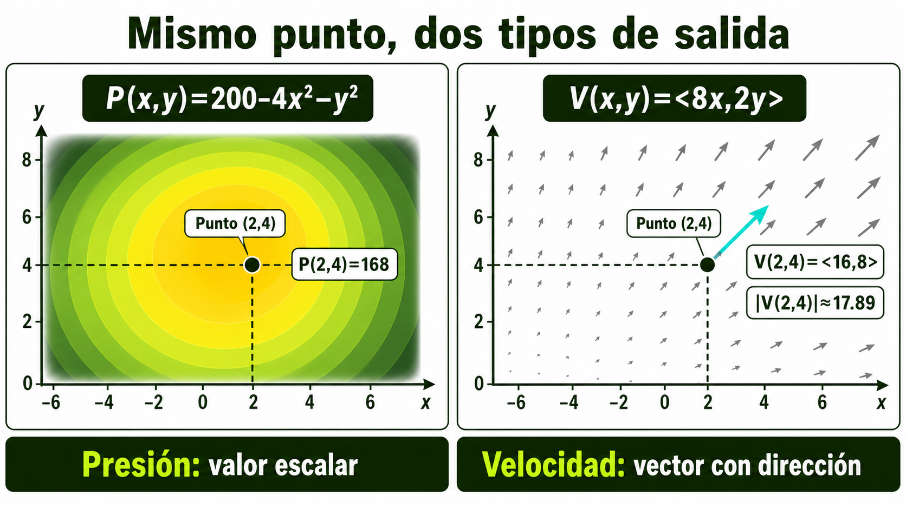
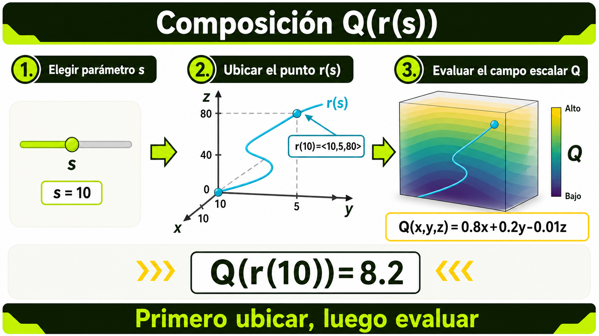

Este contenido abre la ruta de Análisis Vectorial. Antes de estudiar límites, derivadas parciales, gradientes, integrales múltiples o campos vectoriales, el estudiante necesita distinguir con precisión qué tipo de objeto matemático está analizando: una función escalar, una función vectorial, un campo escalar o un campo vectorial. Esta distinción organiza el lenguaje del curso y evita errores de interpretación en los contenidos posteriores.
RA1Semestre 2Virtualización para Moodle con Aprendizaje Guiado
Resultados de aprendizaje
RA1
Interpreto los conceptos y técnicas básicas de una función en varias variables y sus derivadas parciales.
El contenido desarrolla la base conceptual para reconocer funciones escalares y vectoriales, identificar entradas y salidas, leer representaciones y preparar el análisis de dominio, curvas de nivel, límites y derivadas parciales.
Saberes
Conceptuales
Saberes
Función como relación entre entradas y salidas con regla de correspondencia.
Variable independiente, variable dependiente, parámetro, vector de entrada y valor de salida.
Función escalar de una variable, función escalar de varias variables y campo escalar.
Función vectorial y campo vectorial.
Diferencia entre cantidad escalar y cantidad vectorial.
Representaciones verbal, algebraica, tabular, gráfica y contextual.
Lectura inicial de funciones en dos y tres variables.
Procedimentales
Saberes
Clasificar una función según el tipo de entrada y el tipo de salida.
Determinar si una expresión representa una función escalar, una función vectorial, un campo escalar o un campo vectorial.
Relacionar una expresión matemática con una situación de ingeniería.
Construir ejemplos propios de funciones escalares y vectoriales.
Interpretar la salida de una función en términos de unidades, dirección, magnitud o significado físico.
Actitudinales
Saberes
Reconocer la importancia de la precisión conceptual antes de aplicar procedimientos.
Comunicar con claridad la interpretación de una función.
Usar tecnología matemática de manera responsable para explorar, no para reemplazar el razonamiento.
Aceptar la revisión de pares como apoyo para detectar errores de clasificación e interpretación.
Introduccion
En cursos anteriores de cálculo y álgebra, la palabra función pudo aparecer como una regla del tipo y = f(x). En Análisis Vectorial, esa idea se amplía: una función puede depender de dos o tres variables, puede devolver un número, puede devolver un vector, puede describir temperatura, presión, velocidad, desplazamiento, flujo, concentración, energía o trabajo. Por eso, antes de calcular, derivar o integrar, conviene detenerse a preguntar: ¿qué entra?, ¿qué sale?, ¿qué significa la salida?, ¿la salida tiene dirección?, ¿la entrada es un punto, un vector, un parámetro o una trayectoria?
Este primer contenido no busca memorizar nombres. Busca construir una forma de mirar los objetos matemáticos que aparecerán durante todo el curso. Si el estudiante confunde una función escalar con un campo vectorial, puede seleccionar mal el método, interpretar de forma incorrecta una gráfica o atribuir dirección a una cantidad que no la tiene. En ingeniería, ese error conceptual puede cambiar el sentido de un modelo: no es lo mismo conocer la temperatura en cada punto de una formación geológica que conocer la velocidad de flujo de un fluido en cada punto.
La ruta completa estudia herramientas para modelar fenómenos que cambian en el espacio. En este contenido se construye el vocabulario inicial; en el siguiente se profundizará en dominio, rango, curvas de nivel y superficies; después se estudiarán límites, continuidad, derivadas parciales, optimización, integrales múltiples y cálculo vectorial.
Contenido teorico
1. La función como relación entre entrada, regla y salida
Una función puede entenderse como una regla que asigna a cada elemento permitido de un conjunto de entradas exactamente un elemento de un conjunto de salidas. Esta idea es sencilla en apariencia, pero en análisis vectorial se vuelve más rica porque las entradas y las salidas pueden tener estructura espacial. En una función de una variable real, como , la entrada es un número real y la salida también es un número real. En una función de dos variables, como , la entrada es un par ordenado y la salida es un número. En una función vectorial, como , la entrada es un parámetro y la salida es un vector de posición en el espacio. En un campo vectorial, como , cada punto del plano recibe un vector. La regla de correspondencia no se reduce entonces a una fórmula; también incluye el tipo de objeto que se acepta como entrada, las restricciones de uso, las unidades, el contexto y la forma en que debe interpretarse la salida.
Ampliacion
Para estudiar cálculo de varias variables se requiere reconocer cuatro preguntas básicas. La primera es: ¿cuál es la entrada? Puede ser un número, un par ordenado, una terna, un vector o un parámetro. La segunda es: ¿cuál es la salida? Puede ser un escalar, un vector, una matriz o una descripción geométrica. La tercera es: ¿cuál es el dominio? Es decir, qué entradas hacen que la regla tenga sentido matemático y contextual. La cuarta es: ¿qué representa la salida en el problema? Una misma expresión algebraica puede tener significados diferentes según el fenómeno modelado. Por ejemplo, puede representar una altura idealizada, una energía potencial, una función de costo, una medida de distancia al origen o una distribución simétrica de intensidad. El cálculo posterior depende de esa interpretación.
Conexion con stewart
Stewart desarrolla esta ampliación al pasar de la geometría del espacio y los vectores a funciones de varias variables. El enfoque combina representación algebraica, lectura geométrica y uso de ejemplos, lo cual resulta adecuado para una ruta virtual con problemas guiados.
2. Cantidades escalares y cantidades vectoriales
Una cantidad escalar se describe mediante un valor numérico asociado a una unidad o magnitud. Temperatura, presión, densidad, concentración, energía, volumen y masa son ejemplos de cantidades escalares cuando se registran como un número en cada punto o en cada instante. Una cantidad vectorial, en cambio, requiere magnitud, dirección y sentido. Velocidad, fuerza, desplazamiento, aceleración y gradiente son ejemplos típicos. En ingeniería, esta distinción es más que terminológica. Si se mide presión en un punto del subsuelo, se obtiene una cantidad escalar; si se estudia la dirección probable de flujo de un fluido, se necesita una cantidad vectorial. La presión puede variar espacialmente y formar un campo escalar; la velocidad del fluido puede variar espacialmente y formar un campo vectorial.
Ampliacion
La diferencia entre escalar y vector no depende de que aparezcan varias variables. Una función de varias variables puede ser escalar si devuelve un número. Por ejemplo, puede representar temperatura en un punto del espacio. La entrada tiene tres coordenadas, pero la salida es una temperatura. Por el contrario, una función de una variable puede ser vectorial si devuelve un vector. Por ejemplo, describe la posición de una partícula en el espacio según el parámetro t. En este caso, la entrada es un número real, pero la salida es una terna ordenada que representa posición. Una fuente frecuente de error consiste en mirar solo cuántas variables aparecen y no mirar qué tipo de salida produce la función.
Criterio de lectura
Para clasificar correctamente una función, el estudiante debe mirar simultáneamente entrada, salida y contexto. Si la regla asigna un número a cada punto, se trata de una función escalar de varias variables o de un campo escalar. Si asigna un vector a cada valor del parámetro o a cada punto del espacio, se trata de una función vectorial o de un campo vectorial. La notación ayuda, pero no reemplaza la interpretación.

Clasificacion entrada-salida: lo vectorial lo define la salida, no la cantidad de variables.
3. Funciones escalares de varias variables
Una función escalar de varias variables toma como entrada dos o más variables y produce como salida un número. Se suele escribir , o, de forma más compacta, , donde r representa un vector de posición. Si , cada punto del plano produce un único número. Si , cada punto del espacio produce la suma de los cuadrados de sus coordenadas. En términos geométricos, una función puede representarse como una superficie , mientras que una función no se grafica de forma directa en el espacio tridimensional usual porque requeriría una cuarta dimensión para mostrar el valor de salida; en ese caso se usan superficies de nivel, cortes, colores, tablas o representaciones alternativas.
Aplicacion en ingenieria
En ingeniería de petróleos, una función escalar puede representar la presión dentro de un yacimiento, la temperatura , la porosidad o una concentración . En todos estos casos, cada punto espacial recibe un valor numérico. El valor puede cambiar con el tiempo, por lo que a veces se escribe , pero la salida sigue siendo escalar. Esta escritura permite formular preguntas como: ¿dónde es mayor la presión?, ¿en qué dirección cambia más rápidamente?, ¿qué región supera cierto umbral?, ¿cómo se relaciona la distribución de presión con un posible flujo? Algunas de esas preguntas se responderán más adelante con derivadas parciales, gradiente e integrales.
Representacion
La representación de una función escalar puede realizarse mediante tablas, mapas de contorno, curvas de nivel, superficies, colores o cortes. Cada representación enfatiza algo distinto. Una tabla ayuda a comparar valores discretos; una superficie muestra cambios globales; una curva de nivel muestra conjuntos de puntos con el mismo valor; un mapa de calor permite identificar regiones de mayor o menor intensidad. En aprendizaje virtual, conviene combinar representaciones porque el estudiante puede comprender una función desde varios lenguajes.
4. Funciones vectoriales y trayectorias parametrizadas
Una función vectorial produce como salida un vector. Cuando depende de un parámetro, suele describir una trayectoria, una posición, una velocidad o una aceleración. Por ejemplo, asigna a cada valor de t un punto o vector de posición en el espacio. La variable t puede representar tiempo, profundidad, longitud recorrida o simplemente un parámetro geométrico. Lo importante es que la salida no es un solo número, sino una colección ordenada de componentes. Cada componente puede analizarse como una función escalar del parámetro, pero el objeto completo tiene interpretación vectorial.
Aplicacion en ingenieria
En un contexto de perforación o trayectoria de pozo, una curva parametrizada puede representar la posición del taladro o de una trayectoria idealizada en el subsuelo. El parámetro puede ser longitud medida, tiempo de operación o profundidad. La función vectorial permite describir cómo cambian simultáneamente las coordenadas. Si se añade una función escalar sobre esa trayectoria, por ejemplo presión , se obtiene el valor de presión a lo largo del recorrido. Esta composición prepara el camino para integrar cantidades sobre trayectorias.
Diferencia con funcion escalar
Si , la salida es un número; si , la salida es un vector en el plano. Ambas reglas usan el parámetro t, pero representan objetos distintos. En la primera se puede dibujar una curva en el plano t-y; en la segunda se dibuja una trayectoria en el plano x-y. Esta diferencia es central para estudiar movimiento, curvas en el espacio e integrales de línea. Más adelante, cuando se calcule una integral sobre una curva, la trayectoria podrá parametrizarse mediante una función vectorial.
5. Campos escalares y campos vectoriales
Un campo es una asignación de información a cada punto de una región. Si a cada punto se le asigna un número, se habla de campo escalar; si a cada punto se le asigna un vector, se habla de campo vectorial. La palabra campo enfatiza que la cantidad está distribuida en el espacio. Por ejemplo, T(x, y) puede describir temperatura sobre una placa; puede describir presión en una región del subsuelo; puede describir una fuerza o velocidad en cada punto del plano.
Comparacion
La diferencia entre función vectorial y campo vectorial puede entenderse desde la entrada. Una función vectorial r(t) asigna un vector a cada valor del parámetro t; usualmente describe una curva. Un campo vectorial F(x, y) asigna un vector a cada punto del plano; describe una distribución espacial de vectores. En una función vectorial, la salida puede interpretarse como posición de un punto que se mueve. En un campo vectorial, la salida puede interpretarse como la velocidad o fuerza que actuaría si un objeto estuviera en ese punto. Confundir estas ideas provoca errores: una trayectoria no es lo mismo que un campo por el que se desplaza una partícula.
Proyeccion hacia contenidos posteriores
En los contenidos finales del curso, los campos vectoriales permitirán estudiar integrales de línea y teorema de Green. Pero para llegar allí se necesita primero comprender que un campo vectorial no es una sola flecha, sino una regla que genera una flecha en cada punto del dominio. La lectura visual de estos campos exige observar patrones: dirección dominante, simetría, rotación, intensidad, puntos críticos y cambios de magnitud.

Cuatro objetos matematicos y cuatro formas de representarlos.
6. Representaciones: verbal, algebraica, tabular, gráfica y contextual
Una función no se comprende completamente desde una sola representación. La representación algebraica muestra la regla; la verbal describe el fenómeno; la tabular muestra valores; la gráfica comunica forma, tendencia o distribución; la contextual aclara unidades, restricciones y propósito. En cálculo multivariable, el cambio entre representaciones es una habilidad central. Por ejemplo, la expresión puede verse como una superficie paraboloide, como un modelo idealizado de altura, como una distribución simétrica de presión o como una función que decrece al alejarse del origen. Cada lectura aporta información diferente.
Uso en moodle
En una ruta virtual, esta variedad de representaciones ayuda a que el estudiante no dependa de una única forma de explicación. El recurso puede iniciar con una situación verbal, mostrar una tabla de valores, presentar la fórmula, pedir al estudiante que anticipe la forma de la gráfica, y luego contrastar con una representación visual. Este encadenamiento activa el aprendizaje guiado: primero se recupera lo que el estudiante cree saber, luego se orienta la observación, después se realiza práctica y finalmente se produce una evidencia.
Error frecuente
Un error frecuente es creer que graficar una función equivale a comprenderla. Una gráfica puede ser incorrecta por escala, dominio, perspectiva o lectura de ejes. También puede ocultar unidades o restricciones. Por eso, cada representación debe acompañarse con preguntas de interpretación: ¿qué significa un punto?, ¿qué representa una altura?, ¿qué indica una flecha?, ¿qué región está permitida?, ¿qué unidades tiene la salida?, ¿qué ocurre si una variable permanece fija?
7. La notación como herramienta de precisión
La notación en análisis vectorial debe leerse con cuidado. La expresión indica normalmente una función escalar de dos variables. La expresión r(t) suele indicar una función vectorial parametrizada. La expresión suele indicar un campo vectorial en el plano. Cuando se escribe , se espera una salida escalar dependiente de tres coordenadas. Cuando se escribe , se espera un campo vectorial tridimensional. Esta lectura inicial orienta las operaciones posibles. No se deriva ni se integra de la misma manera una función escalar que una trayectoria o un campo.
8. Funciones en contexto: del símbolo al modelo
Un modelo matemático no es solo una fórmula. Es una construcción que selecciona variables, establece relaciones, simplifica la realidad y permite analizar un fenómeno. En ingeniería, una función puede modelar presión, velocidad, temperatura, concentración, costo, eficiencia, caudal o energía. El modelo siempre tiene supuestos. Por ejemplo, una función P(x, y) que representa presión sobre una sección horizontal puede suponer que la variación vertical es despreciable o que se estudia una capa específica. Una función v(x, y) que representa velocidad puede suponer flujo estacionario o una región bidimensional idealizada. Estos supuestos deben quedar claros para interpretar correctamente el resultado.
Desarrollo procedimental
1
Identificar la entrada.
Revise si la regla recibe un número, un par ordenado, una terna, un parámetro o un vector. Escriba la entrada de forma explícita. Por ejemplo, en , la entrada es el par (x, y); en r(t), la entrada es el parámetro t; en F(x, y, z), la entrada es la terna (x, y, z).
2
Identificar la salida.
Determine si la regla produce un número o un vector. Si produce un solo valor, la salida es escalar. Si produce componentes ordenadas, la salida es vectorial. No confunda el número de variables de entrada con el tipo de salida.
3
Leer la regla en contexto.
Pregunte qué representa la función. Una misma estructura puede describir altura, presión, costo o energía. El contexto define unidades y restricciones.
4
Nombrar el tipo de objeto.
Use una categoría precisa: función escalar de una variable, función escalar de varias variables, función vectorial parametrizada, campo escalar o campo vectorial.
5
Elegir una representación útil.
Seleccione una tabla, gráfica, superficie, curva de nivel, mapa de flechas, diagrama de componentes o explicación verbal según el propósito de lectura.
6
Anticipar operaciones futuras.
Determine qué operaciones serán naturales más adelante: derivadas parciales para funciones escalares de varias variables, gradiente para campos escalares, parametrización para trayectorias, integrales de línea para campos y curvas.

Ruta de decision para clasificar funciones antes de resolver ejercicios.
Procedimiento para leer una situacion de ingenieria
Pasos
Describir el fenómeno con palabras propias.
Listar las variables espaciales o temporales que intervienen.
Distinguir si la cantidad observada tiene solo magnitud o también dirección.
Proponer una notación coherente para la función.
Indicar unidades posibles de entrada y salida.
Explicar qué información daría una gráfica o una tabla.
Declarar qué no puede concluirse con la información disponible.
Procedimiento para verificar una clasificacion
Pasos
Reemplace la entrada por un ejemplo numérico permitido.
Calcule o describa la salida.
Observe si la salida es un número o un vector.
Verifique si el resultado tiene sentido en el contexto.
Compare con la categoría asignada inicialmente.
Corrija la clasificación si la salida contradice la lectura inicial.
Ejemplos
Ejemplo 1: Función escalar de dos variables
Planteamiento
Sea . Clasifique la función e interprete la salida.
Desarrollo
La entrada está formada por dos números: x y y. Cada par (x, y) produce un único número real. Por ejemplo, si x = 3 y y = 2, entonces . La salida es un número, no un vector. Por tanto, se trata de una función escalar de dos variables. Si el contexto fuera ingeniería, la salida podría representar una altura, una presión idealizada, una diferencia de potencial o un valor de costo, según las unidades definidas. Sin contexto, solo podemos afirmar su estructura matemática.
Conclusion
La función es escalar porque la salida es un número; depende de dos variables porque la entrada es un par ordenado.
Ejemplo 2: Función vectorial parametrizada
Planteamiento
Sea . Clasifique la función.
Desarrollo
La entrada es un solo parámetro t. La salida tiene tres componentes ordenadas: t, y 2 - t. Para t = 1, la salida es . Para t = 2, la salida es . Cada valor de t produce un vector de posición en el espacio tridimensional. Por tanto, r(t) es una función vectorial. Puede interpretarse como una trayectoria, porque al variar t se obtiene una curva en el espacio.
Conclusion
La función es vectorial aunque tenga una sola variable de entrada, porque su salida es un vector.
Ejemplo 3: Campo escalar
Planteamiento
Sea . Suponga que P representa presión idealizada en una región del subsuelo.
Desarrollo
La entrada es una terna espacial (x, y, z). La salida es un número que representa presión. Aunque la función depende de tres coordenadas, la salida no tiene dirección; solo expresa magnitud. Por eso se trata de un campo escalar. La expresión sugiere que la presión disminuye cuando z aumenta y aumenta ligeramente cuando x aumenta, si las unidades se mantienen coherentes. No se puede concluir nada sobre el flujo por sí solo; para hablar de flujo sería necesario estudiar cambios espaciales, gradientes u otros modelos.
Conclusion
El objeto es un campo escalar porque asigna un valor numérico de presión a cada punto de una región.
Ejemplo 4: Campo vectorial
Planteamiento
Sea . Clasifique la función e interprete su patrón.
Desarrollo
La entrada es un punto del plano (x, y). La salida es un vector con dos componentes: -y y x. En el punto (1, 0), . En el punto (0, 1), . En el punto (-1, 0), . La salida cambia de dirección según el punto de entrada. Este objeto no representa una sola trayectoria, sino una flecha asignada a cada punto del plano. El patrón sugiere rotación alrededor del origen.
Conclusion
Se trata de un campo vectorial en el plano. Más adelante, un campo de este tipo permitirá estudiar circulación mediante integrales de línea.
Ejemplo 5: Comparación entre trayectoria y campo
Planteamiento
Compare y .
Desarrollo
La función r(t) toma un parámetro t y produce puntos sobre una circunferencia unitaria. Describe una curva o trayectoria. En cambio, F(x, y) toma cualquier punto del plano y produce un vector asociado a ese punto. Aunque ambas expresiones pueden relacionarse visualmente con rotación, no representan lo mismo. r(t) indica dónde está un punto para cada valor de t. F(x, y) indica qué vector corresponde a cada punto del plano. Si una partícula se moviera por la trayectoria r(t) dentro del campo F, se podrían evaluar los vectores del campo sobre la trayectoria mediante .
Conclusion
La trayectoria es una función vectorial parametrizada; el campo asigna vectores a puntos de una región.
Problemas resueltos
Problema resuelto 1: Clasificación de modelos matemáticos
Universitario inicial
Planteamiento
Clasifique los siguientes objetos e indique entrada, salida y posible interpretación: a) ; b) ; c) ; d) .
Solucion paso a paso
1
Para T(x, y), la entrada es el par (x, y). La salida es un número. Por tanto, es una función escalar de dos variables o campo escalar en una región plana. Podría representar temperatura sobre una superficie.
2
Para r(s), la entrada es el parámetro s. La salida es un vector de tres componentes. Por tanto, es una función vectorial parametrizada. Podría representar una trayectoria en el espacio con altura constante z = 10.
3
Para W(x, y, z), la entrada es la terna espacial (x, y, z). La salida es un vector de tres componentes. Por tanto, es un campo vectorial tridimensional. Podría representar velocidad, fuerza o dirección de cambio en cada punto.
4
Para C(t), la entrada es un parámetro t y la salida es un número. Es una función escalar de una variable. Podría representar una concentración que disminuye con el tiempo.
Justificacion conceptual
La clasificación no se hace contando símbolos, sino comparando tipo de entrada y tipo de salida. Una salida escalar produce un número; una salida vectorial produce componentes ordenadas.
Resultado
a) Campo escalar plano. b) Función vectorial parametrizada. c) Campo vectorial tridimensional. d) Función escalar de una variable.
Interpretacion
Los cuatro objetos pueden ser útiles en ingeniería, pero habilitan operaciones diferentes. T puede analizarse con curvas de nivel; r puede describir trayectoria; W puede analizarse como campo; C puede estudiarse como evolución temporal.
Problema resuelto 2: Presión y velocidad en una sección idealizada
Universitario aplicado
Planteamiento
En una sección idealizada de un medio poroso se proponen dos modelos: y . Las coordenadas están en metros. P se expresa en unidades de presión idealizadas y V en unidades de velocidad idealizadas. Clasifique cada modelo, evalúe ambos en el punto (2, 4) e interprete las salidas.
Solucion paso a paso
1
Clasificamos P. La entrada es (x, y), un punto del plano. La salida es un número. P es un campo escalar porque asigna un valor de presión a cada punto.
2
Clasificamos V. La entrada es (x, y), un punto del plano. La salida es un vector de dos componentes. V es un campo vectorial porque asigna una velocidad a cada punto.
3
Evaluamos P(2, 4): .
4
Evaluamos V(2, 4): .
5
Interpretamos. En el punto (2, 4), el modelo de presión entrega el valor escalar 168. El modelo de velocidad entrega un vector con dirección hacia el primer cuadrante y componentes 16 y 8.
6
Calculamos magnitud de V para completar la lectura: , aproximadamente 17.89.

Mismo punto, dos tipos de salida: presion escalar y velocidad vectorial.
Justificacion conceptual
La presión es escalar porque no requiere dirección para describirse en un punto. La velocidad es vectorial porque requiere dirección y magnitud.
Resultado
P es campo escalar y . V es campo vectorial y , con magnitud aproximada 17.89.
Interpretacion
El punto tiene una presión modelada de 168 y una velocidad dirigida con mayor componente en x que en y. Esta diferencia prepara la lectura de gradientes y campos en contenidos posteriores.
Problema resuelto 3: Trayectoria de pozo simplificada y propiedad escalar
Universitario aplicado
Planteamiento
Una trayectoria simplificada se modela mediante , con s entre 0 y 20. Una propiedad escalar del medio se modela como . a) Clasifique r y Q. b) Evalúe la posición para s = 10. c) Evalúe Q sobre la trayectoria en s = 10. d) Explique qué significa componer .
Solucion paso a paso
1
r(s) recibe un parámetro y entrega un vector de tres componentes. Es una función vectorial parametrizada que describe una trayectoria espacial.
2
Q(x, y, z) recibe un punto del espacio y entrega un número. Es un campo escalar tridimensional.
3
Evaluamos r(10): .
4
Evaluamos Q en el punto obtenido: .
5
La composición significa medir la propiedad escalar Q a lo largo de la trayectoria r. Primero se ubica el punto de la trayectoria para un valor de s y luego se evalúa la propiedad en ese punto.
6
Podemos escribir la composición: .

Composicion de un campo escalar con una trayectoria parametrizada.
Justificacion conceptual
Este problema muestra cómo una función vectorial puede alimentar a un campo escalar. La trayectoria produce puntos; el campo escalar asigna valores a esos puntos.
Resultado
r es función vectorial parametrizada; Q es campo escalar; ; ; .
Interpretacion
La composición permite estudiar cómo cambia una propiedad del medio mientras se recorre una trayectoria. Esta idea será útil al estudiar integrales de línea y campos.
Problema resuelto 4: Detección de errores de interpretación
Universitario conceptual
Planteamiento
Un estudiante afirma: 'La función es vectorial porque tiene tres variables'. Analice la afirmación, corrija el error y proponga un ejemplo de función vectorial con tres variables de entrada.
Solucion paso a paso
1
Identificamos la entrada de f: una terna (x, y, z).
2
Identificamos la salida: x + y - z es un solo número real.
3
Concluimos que f no es vectorial. Es una función escalar de tres variables o campo escalar en el espacio.
4
El error del estudiante consiste en clasificar por número de variables de entrada y no por tipo de salida.
5
Un ejemplo de función vectorial con tres variables de entrada es . La entrada sigue siendo una terna, pero la salida ahora tiene tres componentes.
Justificacion conceptual
Lo vectorial se define por la salida vectorial, no por la cantidad de variables independientes.
Resultado
La afirmación es incorrecta. f es campo escalar. Un ejemplo vectorial es .
Interpretacion
Este tipo de error debe corregirse temprano porque afecta la selección de métodos en todo el curso.
Problema resuelto 5: Selección de representación adecuada
Universitario de análisis
Planteamiento
Para cada objeto, seleccione una representación visual adecuada y justifique: a) ; b) ; c) ; d) .
Solucion paso a paso
1
Para , una superficie muestra el paraboloide. También son útiles curvas de nivel circulares porque f toma el mismo valor cuando es constante.
2
Para , una curva parametrizada en el plano muestra la circunferencia unitaria y flechas de orientación según aumenta t.
3
Para , un campo de flechas permite observar que todas las flechas tienen componente horizontal positiva constante y componente vertical dependiente de y.
4
Para , las superficies de nivel son adecuadas, porque la salida es escalar en tres variables y una gráfica directa requeriría una dimensión adicional.
Justificacion conceptual
La representación se elige según entrada, salida y propósito. Las superficies funcionan bien para funciones escalares de dos variables; los campos de flechas para campos vectoriales; las trayectorias para funciones vectoriales parametrizadas; las superficies de nivel para campos escalares tridimensionales.
Resultado
a) Superficie y curvas de nivel. b) Curva parametrizada orientada. c) Campo de flechas. d) Superficies de nivel.
Interpretacion
Elegir representación es parte del razonamiento matemático. Una representación inadecuada puede ocultar el fenómeno o inducir errores.
Caso de aplicacion
Lectura inicial de variables en una sección de subsuelo idealizada
Situacion: Un equipo académico simula una sección bidimensional de un medio poroso para iniciar el análisis matemático de propiedades espaciales. No se busca modelar un yacimiento real, sino entrenar la lectura de objetos matemáticos. Se proponen tres expresiones: , y . El estudiante debe identificar qué representa cada expresión desde el punto de vista matemático, qué tipo de salida produce y qué representación visual convendría construir.
Preguntas guia
¿Cuál expresión asigna un número a cada punto?
¿Cuál expresión asigna un vector a cada punto?
¿Cuál expresión describe una trayectoria?
¿Qué podría significar evaluar ?
¿Qué errores aparecerían si se confundiera V(x,y) con r(t)?
Transferencia: El caso permite reconocer la diferencia entre propiedad escalar, campo vectorial y trayectoria. Esta distinción se usará posteriormente para estudiar curvas de nivel, gradientes, integrales múltiples e integrales de línea.
Practica guiada
Ficha de lectura de funciones escalares y vectoriales
Instrucciones paso a paso
Revise cada expresión dada en la actividad.
Escriba la entrada exacta: número, parámetro, par ordenado, terna o punto del espacio.
Evalúe la función en un punto sencillo permitido para observar la salida.
Clasifique la salida como escalar o vectorial.
Nombre el tipo de objeto matemático.
Proponga una representación visual adecuada.
Escriba una interpretación contextual breve sin exagerar lo que el modelo permite concluir.
Compare su clasificación con la de un compañero y registre una corrección o confirmación.
Materiales
Calculadora básica o herramienta de cálculo simbólico usada con criterio.
GeoGebra u otra herramienta de visualización, si está disponible.
Plantilla de ficha de lectura provista en Moodle.
Infografía de clasificación entrada-salida.
Tiempo estimado: 3 horas de trabajo autónomo y 1 hora de acompañamiento o foro orientado.
Acompanamiento docente: El docente revisará muestras de clasificación, señalará errores frecuentes y orientará la diferencia entre trayectoria, campo escalar y campo vectorial.
Actividad
Clasificar, representar e interpretar funciones en contexto
Que comprender: Debe comprender que una función se clasifica por su entrada, su salida y su interpretación. Debe distinguir cantidad escalar, cantidad vectorial, campo escalar, función vectorial parametrizada y campo vectorial.
Que hacer
Clasifique ocho expresiones matemáticas propuestas en Moodle.
Para cada expresión, complete una ficha con entrada, salida, tipo de objeto, evaluación en un punto y representación sugerida.
Seleccione dos expresiones y proponga una interpretación contextual relacionada con ingeniería o ciencias básicas.
Elabore un mapa conceptual breve que compare función escalar, función vectorial, campo escalar y campo vectorial.
Publique una observación en el foro sobre un error conceptual que haya corregido durante la actividad.
Que entregar
Ficha de clasificación completa en formato definido por el aula.
Mapa conceptual en PDF, imagen o documento editable.
Participación breve en foro con reflexión sobre error corregido.
Como entregarlo: Subir la ficha y el mapa conceptual en la actividad de Moodle del Contenido 1. La reflexión se publica en el foro asociado. Si se usa una herramienta visual, incluir enlace o captura legible.
Para que sirve: La actividad permite verificar si el estudiante está preparado para estudiar dominio, curvas de nivel, límites y derivadas parciales sin confundir objetos matemáticos.
Condiciones de calidad
La clasificación debe justificar entrada y salida.
La interpretación no debe inventar unidades ni contexto cuando no estén dados.
El mapa conceptual debe mostrar relaciones, no solo definiciones aisladas.
La participación en foro debe aportar una reflexión propia y respetuosa.
Evidencia
Producto observable
Producto observable: Ficha de clasificación e interpretación de funciones escalares y vectoriales, mapa conceptual comparativo y participación reflexiva en foro.
Relacion con ra: Evidencia inicial del RA1 porque muestra comprensión de conceptos básicos de funciones en varias variables y preparación para derivadas parciales.
Criterios de observacion
Identifica correctamente entrada y salida.
Clasifica con precisión los objetos matemáticos.
Interpreta la salida según contexto.
Selecciona representaciones visuales pertinentes.
Comunica con notación y lenguaje académico claro.
Criterios cualitativos
La valoración se realiza de acuerdo con PL-GAP-007: formativa, cualitativa, continua y centrada en resultados de aprendizaje. No se asigna porcentaje porque el sílabo entregado no define pesos evaluativos.
Sobresaliente
Clasifica todos los objetos con precisión, justifica entrada y salida, interpreta con contexto pertinente, reconoce límites del modelo y comunica relaciones en un mapa conceptual claro y profundo.
Muy bueno
Clasifica la mayoría de objetos con precisión, explica adecuadamente la diferencia entre escalar y vectorial, y presenta una interpretación contextual coherente con pocos ajustes necesarios.
Bueno
Distingue los tipos principales de funciones y campos, aunque requiere fortalecer justificaciones o representación visual.
Aceptable
Reconoce algunas diferencias básicas, pero presenta confusiones ocasionales entre número de variables y tipo de salida.
Insuficiente
Clasifica de manera incompleta o confunde de forma reiterada funciones escalares, funciones vectoriales, campos escalares y campos vectoriales.
Deficiente
No evidencia comprensión operativa de entrada y salida, o entrega respuestas sin justificación matemática.
No acreditable
No entrega evidencia verificable o la entrega no permite valorar el resultado de aprendizaje.
El criterio se conecta con CE1 del sílabo: reconoce funciones escalares y vectoriales. Este contenido trabaja el primer tramo de ese criterio antes de abordar derivadas parciales y optimización.
Se observará puntualidad, participación activa, uso responsable de herramientas tecnológicas y comunicación asertiva en la coevaluación del foro.
Retroalimentacion
Pistas, errores y acciones de mejora
Pistas de revision
Revise si clasificó por tipo de salida y no solo por número de variables.
Compruebe cada clasificación evaluando la función en un punto sencillo.
Pregunte si la salida tiene dirección. Si no tiene dirección, no es vectorial.
Distinga trayectoria de campo: una trayectoria produce puntos al variar un parámetro; un campo asigna valores o vectores a puntos de una región.
Verifique si su representación visual corresponde al tipo de objeto.
Errores frecuentes
Decir que una función es vectorial porque tiene dos o tres variables.
Confundir r(t) con F(x,y), aunque ambas tengan componentes.
Asignar dirección a una cantidad escalar como presión o temperatura.
Usar una gráfica de superficie para un campo vectorial sin flechas ni componentes.
Inventar unidades o contexto que no aparecen en el problema.
Acciones de mejora
Rehacer la ficha de entrada y salida para los ejercicios con error.
Comparar dos ejemplos: uno escalar de varias variables y uno vectorial de una variable.
Construir una tabla con columnas de entrada, salida, tipo y representación.
Consultar la infografía de clasificación antes de resolver nuevos ejercicios.
Explicar oralmente a un compañero por qué un objeto es campo y otro trayectoria.
Acompanamiento: El docente podrá seleccionar tres errores representativos del foro y responder con una retroalimentación general. Los estudiantes que confundan reiteradamente salida escalar y salida vectorial recibirán una actividad corta de refuerzo con ejemplos contrastivos.
Cierre
En este contenido se estableció el lenguaje inicial del análisis vectorial. Una función puede recibir números, puntos o parámetros; puede devolver escalares o vectores; puede representar una trayectoria, una propiedad distribuida o un campo de flechas. La clasificación correcta depende de identificar entrada, salida y contexto. Esta precisión conceptual es indispensable para los próximos contenidos.
Cuando se analice una función en varias variables, el estudiante podrá iniciar con una ficha de lectura: qué entra, qué sale, qué representa, qué restricciones tiene y cómo conviene visualizarla. Esta estrategia será útil al estudiar dominio, curvas de nivel, límites, derivadas parciales, integrales múltiples y campos vectoriales.
¿Qué error sería más grave en un modelo de ingeniería: tratar como vectorial una cantidad escalar o tratar como escalar una cantidad vectorial? Justifique su respuesta con un ejemplo.
El siguiente contenido profundiza en dominio, rango, cónicas, superficies y curvas de nivel. Allí se usará la clasificación aprendida para analizar dónde existe una función y cómo se representa su comportamiento espacial.
Referencias
Fundación Universidad de América. (2025). Syllabus Análisis Vectorial. Formato FO-GAP-003, versión 05.
Stewart, J. (2012). Cálculo de varias variables. Trascendentes tempranas (7.ª ed.). Cengage Learning.
Universidad de América. (2025). PL-GAP-007 Evaluación cualitativa pregrado, versión 03.
Universidad de América. (s. f.). PL_01 Lineamientos para virtualidad.
Universidad de América. (s. f.). AN_01 Desarrollo de estrategias didácticas comunicativas.
Fuentes usadas y trazabilidad
Sílabo: Syllabus Análisis Vectorial, Universidad de América, formato FO-GAP-003, versión 05, fecha de actualización 28/03/2025. Definición de RA1, saberes S1-S4, criterios de evaluación, instrumentos, perfil de egreso y créditos.
Bibliografía base: Stewart, J. (2012). Cálculo de varias variables. Trascendentes tempranas (7.ª ed.). Cengage Learning. Base conceptual para funciones de varias variables, vectores, geometría del espacio y lectura de representaciones gráficas.
Lineamiento institucional: PL_01 Lineamientos para virtualidad, referencia sintetizada en la skill. Criterios de virtualidad, trazabilidad entre recurso, resultado de aprendizaje, actividad y evidencia.
Lineamiento institucional: AN_01 Desarrollo de estrategias didácticas comunicativas, referencia sintetizada en la skill. Uso exclusivo de Aprendizaje Guiado y estructura comunicativa de actividades.
Política institucional: PL-GAP-007 Evaluación Cualitativa Pregrado, versión 03, 24 de febrero de 2025. Criterios cualitativos, retroalimentación formativa, autoevaluación, coevaluación y heteroevaluación.